ACTUAL IMPLEMENTED CAPTURES · 20 OCTOBER 2026 · AWAITING REVIEW · VERIFIED 21 OCTOBER 2026
A fresher Backyard, longer faces and one cheeky magpie
A focused cartoon pass: warmer roof materials, clearer house trim, smoother clouds and gentler material highlights. Three low crates add cover in Backyard. The Face length slider, balloon handling and throw follow-through are ready to try.
Changes and recovery · 642 tests passed · Release build · Exact source files
Gameplay view
Warm sunlight and ambient fill, softened material detail, new low cover. No new post-processing effects. Left: before. Right: after.
Whole Backyard
Three additional crates appear only in Backyard. Shared rendering improvements also appear on reused scenery in the other modes. Left: before. Right: after.
Stacked-box detail
Existing climbable boxes and clothesline clearance remain. Wood keeps its painted texture, with the noisy normal mapping removed for the Pop style. Left: before. Right: after.
Sky and buildings
A warmer horizon, smoother cloud silhouettes, weatherboard and corrugated surfaces, window bars, sills and fascia detail. Left: before. Right: after.
Character and throw readability
Existing design and customisation retained. This fixed-camera view uses the controlled animation preview; it is rendered by the game. Left: before. Right: after.
Face length
0–100%, with 50% preserving the original head. Existing eyes and accessories follow the shape. Saved appearance and multiplayer replication are included. Direct clicking and dragging verified live updates at 0%, 50% and 100%; your original saved settings were preserved. These three captures use the same preview setup.
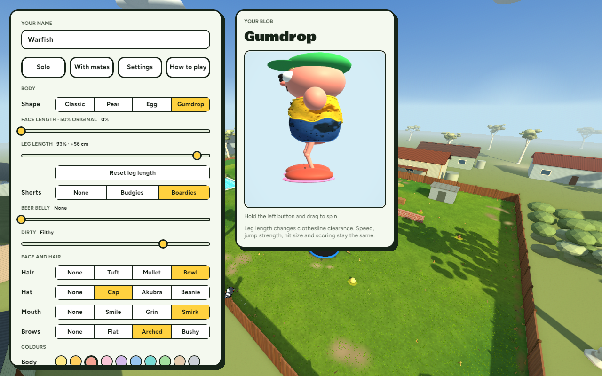
0% · shorter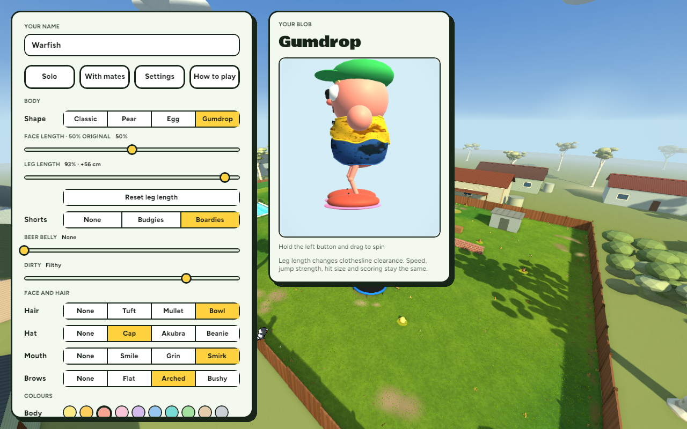
50% · original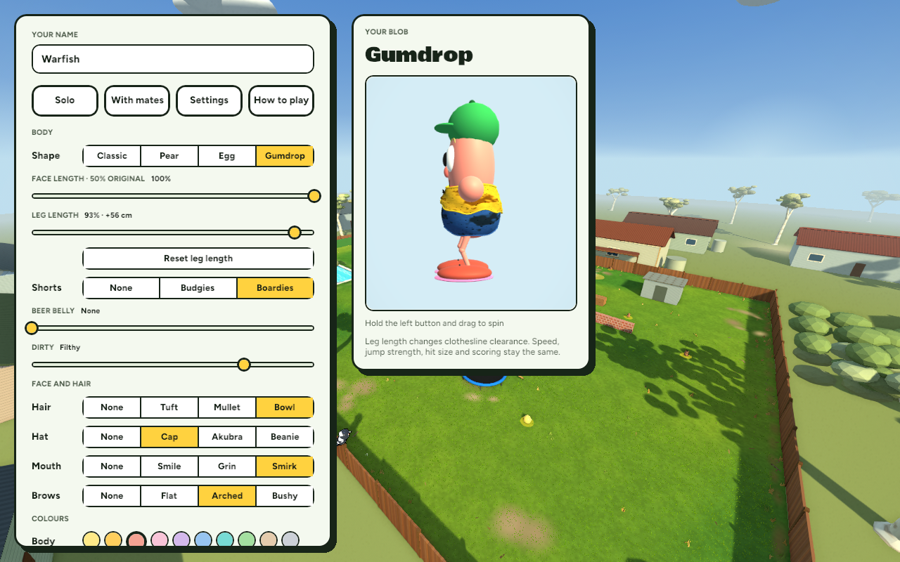
100% · longerActual motion
Controlled fixtures running in the actual game and renderer. No AI-generated concept images.
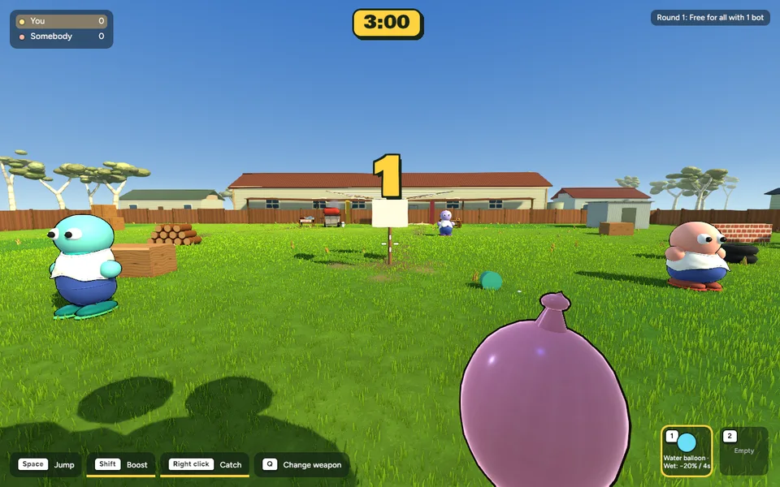
Held balloon and release: smaller presentation, softer highlights, gentle sag and motion; existing trajectory and wet rules retained.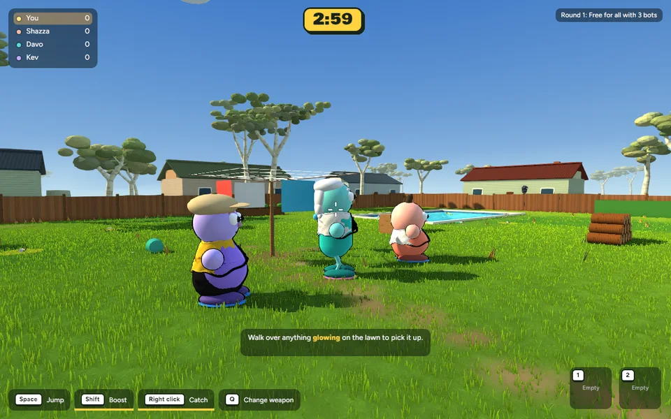
Animation preview: weight-sensitive wind-up, release reach and a longer damped settle. Existing hit-stop, wobble and score feedback retained.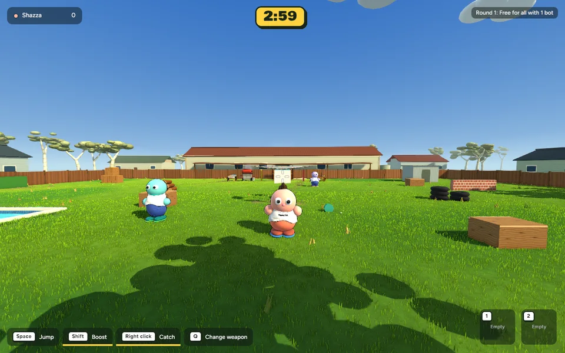
Backyard magpie: warning, committed swoop, one −10 peck, then retreat. This fixture holds a bot still to show contact; ordinary play allows dodging, catching or hitting the bird.Magpie attacks are disabled in Teams, Heist, Smoko, Race and menu/results states. Team rescue mechanics are deferred. Attack state and penalties are host-authoritative.
Performance
| View | Before | After | Mean time change | p95 before → after |
|---|
| gameplay | 8.878 ms / 112.6 FPS | 9.427 ms / 106.1 FPS | +6.2% | 12.80 → 13.67 ms |
| overview | 8.960 ms / 111.6 FPS | 9.399 ms / 106.4 FPS | +4.9% | 12.88 → 14.17 ms |
| close | 8.235 ms / 121.4 FPS | 8.867 ms / 112.8 FPS | +7.7% | 12.77 → 13.43 ms |
| building | 8.223 ms / 121.6 FPS | 8.718 ms / 114.7 FPS | +6.0% | 13.42 → 13.71 ms |
| character | 8.854 ms / 112.9 FPS | 9.135 ms / 109.5 FPS | +3.2% | 13.32 → 13.69 ms |
Same camera, scene setup and 1280×800 resolution, 600 wall-clock samples after 300 warmup frames. Fixed 60 Hz simulation, uncapped rendering. These are desktop interval measurements, not GPU timestamps or a hardware guarantee. Gameplay view: meshes 2939 → 2953, materials 764 → 783, mesh entities 6513 → 6500; retained CPU image bytes 41882008 → 42930584. No newly generated texture assets.
Multiplayer
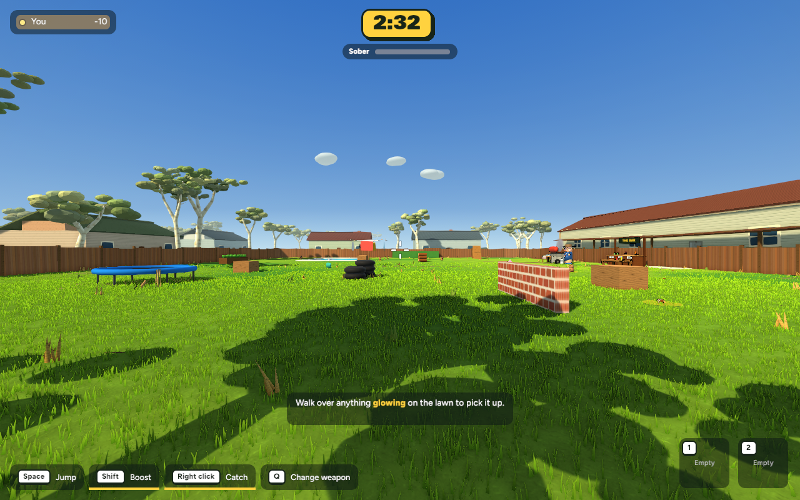
Local host, Face length 0%.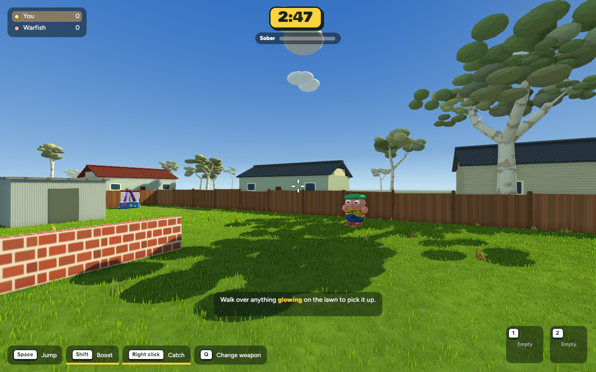
Connected guest, Face length 100%.Two actual clients entered play through the relay, with host-accepted appearance packets and a successful guest throw. Guest logs also confirm warning, swoop and retreat states. Codec and host-state tests cover bird state and score replication. Protocol 13 requires matching builds. WAN latency, packet loss and extended multiplayer balance have not been tested.
Existing modes
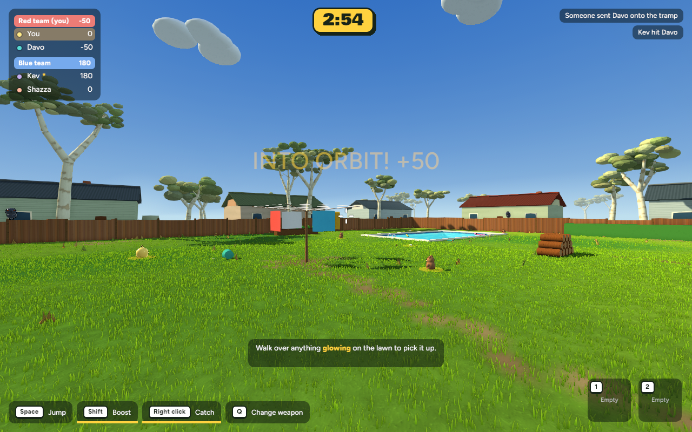
Teams · actual smoke capture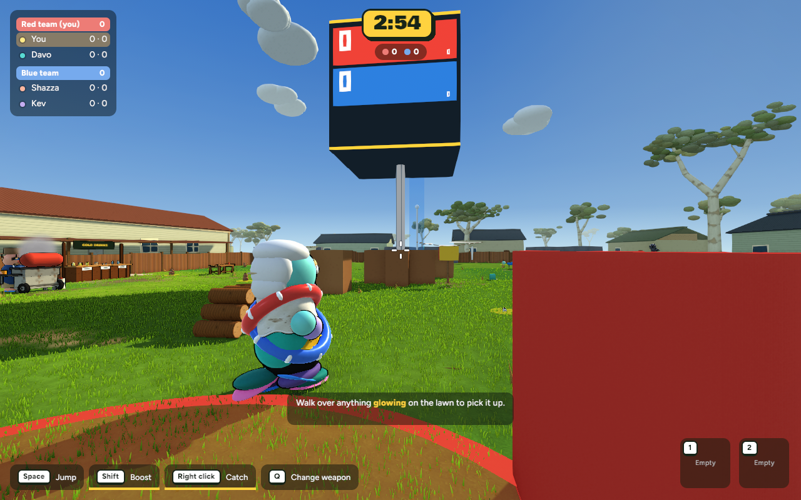
Heist · actual smoke capture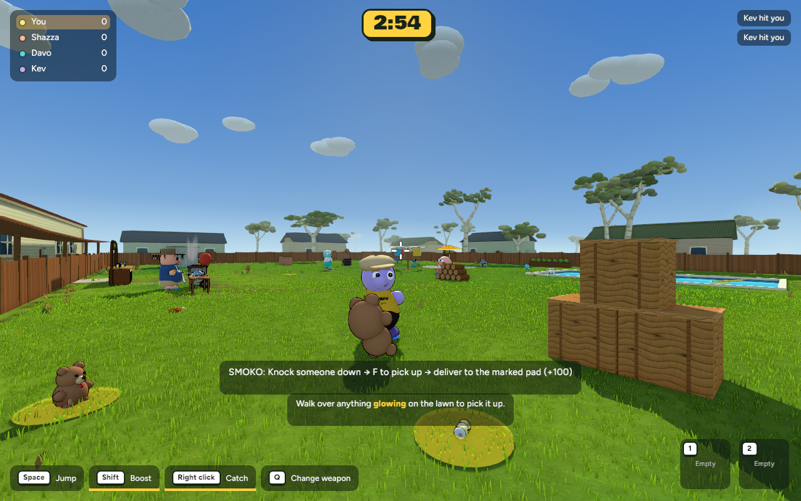
Smoko · actual smoke capture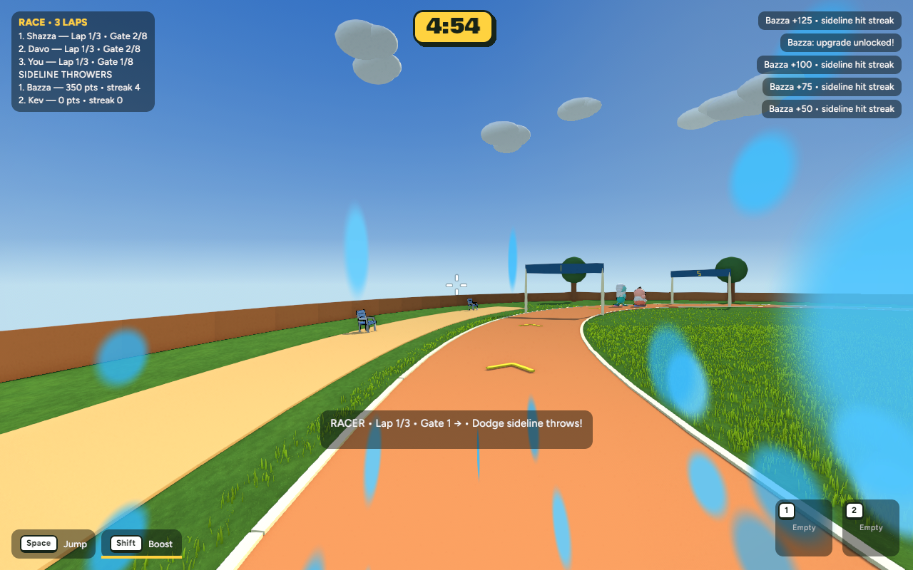
Race · actual smoke captureTry it
cd /Users/marcus/Claude/australian-bbq/rust
~/.cargo/bin/cargo run -p bbq_app --release -- --menu
Full pre-edit backup: /Users/marcus/Claude/australian-bbq-backup-2026-10-20-044909. Guarded rollback instructions are in the checkpoint. Nothing committed or pushed.